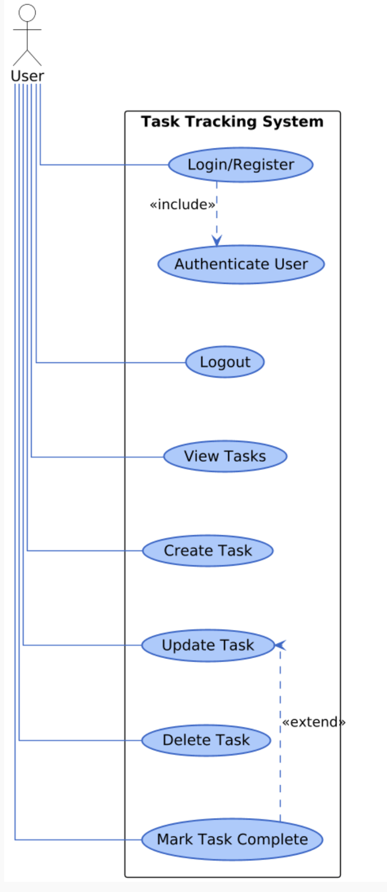

Use Case Documentation
Business Use Cases
| Use Case | Business Value |
|---|---|
| Personal Task Management | - Helps individuals stay organized and focused on daily priorities. - Reduces the chance of forgetting important tasks. - Encourages consistent productivity habits. |
| Goal Tracking | - Improves time management and goal tracking. - Reduces procrastination by providing actionable to-do tasks. - Increases motivation through visible task tracking. |
| Cross-Device Task Synchronization | - Enables consistent experience across devices. - Increases convenience for users switching between phone and computer. - Ensures data reliability and keeps tasks up to date. |
| Daily Planning and Habit Building | - Encourages personal discipline and accountability. - Helps users visualize daily achievements. - Supports habit formation through repetition and visibility. |
Technical Use Cases
Use Case 1: User Registration
| Field | Description |
|---|---|
| Actors | New User |
| Precondition | User is not registered |
| Trigger | Tap Sign Up |
| Main Flow | 1. User enters email and password. 2. Application creates an account. 3. User is redirected to login page. |
| Postcondition | Account created successfully. |
Use Case 2: Login
| Field | Description |
|---|---|
| Actors | Registered User |
| Precondition | Account already exists |
| Trigger | Tap Login |
| Main Flow | 1. User enters credentials. 2. Application verifies credentials. 3. User session is activated. 4. User is redirected to the Dashboard. |
| Postcondition | Secure session is active. |
Use Case 3: Add Task
| Field | Description |
|---|---|
| Actors | Logged-in User |
| Precondition | User is authenticated |
| Trigger | Tap Add Task |
| Main Flow | 1. User fills Task Title and Description. 2. Task is saved and added. 3. UI updates in real time across devices. |
| Postcondition | Task is visible on all connected devices. |
Use Case 4: Edit / Update Task
| Field | Description |
|---|---|
| Actors | Logged-in User |
| Precondition | Task exists and belongs to the user |
| Trigger | Tap Edit |
| Main Flow | 1. Modal opens with pre-filled fields. 2. User edits details and taps Save. 3. UI refreshes instantly across devices. |
| Postcondition | Task is updated across all devices. |
Use Case 5: Delete Task
| Field | Description |
|---|---|
| Actors | Logged-in User |
| Precondition | Task exists and is owned by the user |
| Trigger | Tap Delete |
| Main Flow | 1. A confirmation snackbar appears with an Undo option for 5 seconds. 2. If the user doesn’t undo within that time, the task is permanently deleted. 3. The task is then smoothly removed from the UI. |
| Postcondition | Task permanently deleted. |

Next: Data Modelling →